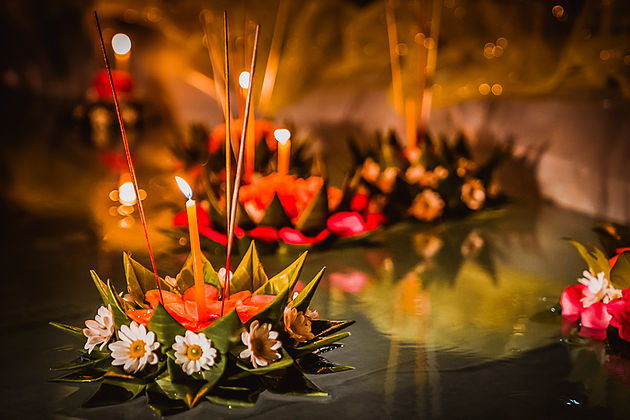
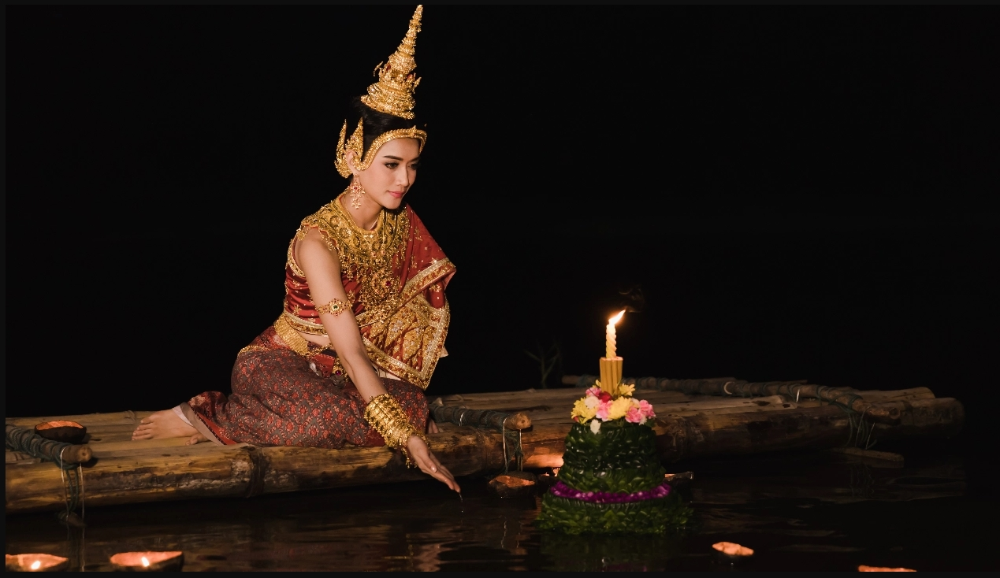
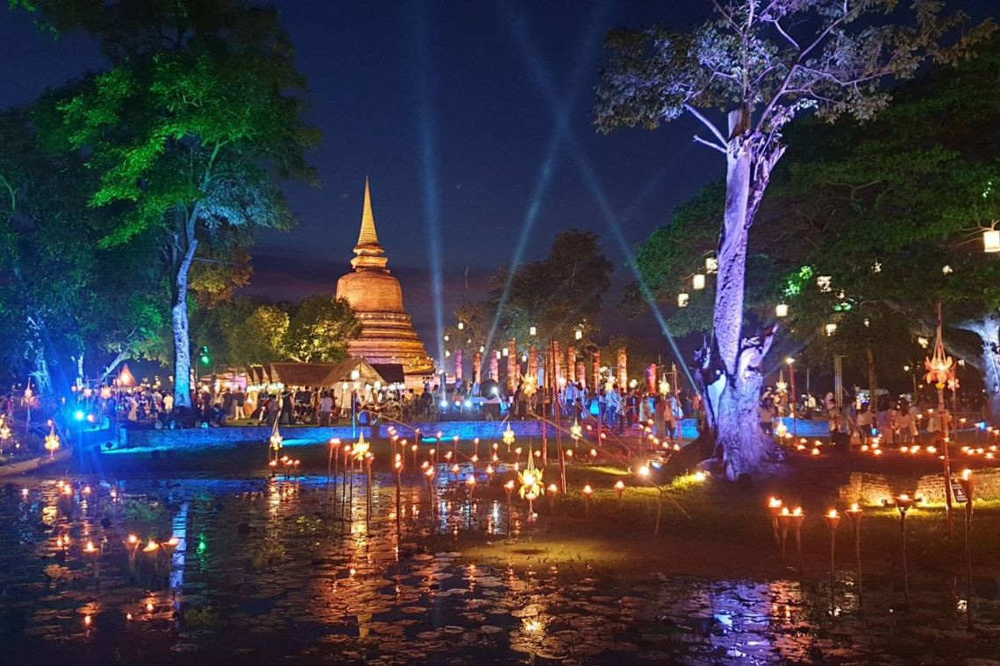

ความเหมือนและความแตกต่างของประเพณีลอยกระทง
ความเหมือน
- ความผูกพันกับสายน้ำ: เป็นปัจจัยสำคัญในการดำรงชีวิตของคนในแต่ละท้องถิ่น
- ช่วงเวลาการจัดงาน: มักจะจัดในช่วงปลายฤดูฝนและเป็นคืนวันเพ็ญพระจันทร์เต็มดวง
- แก่นของความเชื่อ: การแสดงความเคารพต่อสิ่งศักดิ์สิทธิ์และบูชาคุณพระพุทธเจ้า เพื่อลอยความทุกข์โศกทิ้งไป
ความแตกต่าง
- รูปแบบของเครื่องสักการะ: ไทยจะเน้นกระทงขนาดเล็ก ในขณะที่ลาวและกัมพูชามีเรือประดับไฟขนาดใหญ่ ส่วนเมียนมาร์เน้นการจุดโคมไฟและบอลลูน
- กิจกรรมหลัก: ไทยจะเน้นการลอยกระทงของแต่ละบุคคล ส่วนลาวและกัมพูชามีการแข่งขันเรือยาวเป็นหัวใจสำคัญของงาน


